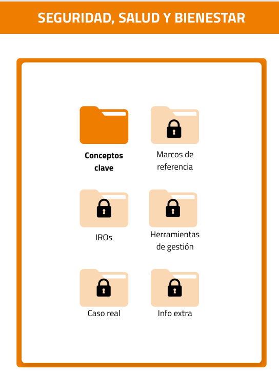

Descripción: Presentación y visualización del tablero
En este tablero se tratan temas centrados en la importancia de la seguridad, salud y bienestar en el trabajo, los principales marcos de referencia, los impactos, riesgos y oportunidades de la seguridad, salud y bienestar.
Recurso: 🔗 Tablero
Tarea:
La dinámica de este recurso consiste en un scape game: los conceptos teóricos se presentan como "carpetas", que son pistas, para resolver las preguntas al final de cada sección. Al responder las preguntas, el alumnado obtendrá partes de un código secreto.

Obtener el resumen y el código de cada misión del tablero:
- Misión 1: Conceptos clave
- Misión 2: Marcos de referencia
- Misión 3: IROs
- Misión 4: Herramientas de gestión
- Misión 5: Caso real
Tarea opcional: Una vez resuelto el reto, comenta brevemente los contenidos de la última carpeta. Contiene información relacionada con los planes presentados en los ejemplos de los casos reales.